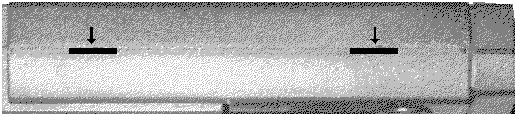
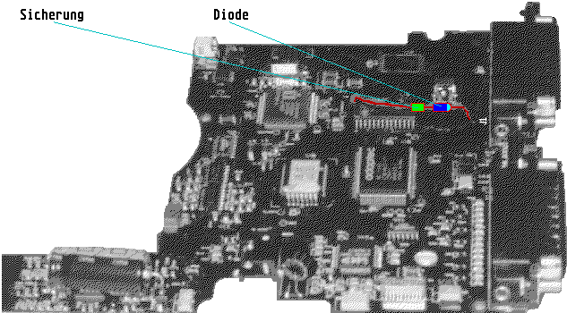

Previous
Next
TOC
Das ZIP-Laufwerk wird von allen Kabeln getrennt und auf die Seite
gelegt. Nun wird mittels eines flachen und breiten Schraubenziehers
vorsichtig die Entriegelung der Gehäuseklemmlaschen auf beiden Seiten
vorgenommen.

Nach dem Abnehmen des Gehäuseoberteils und Entfernen der Laufwerks-
blende sehen Sie nun den schwarzen Mediumtransportschlitten. Hier
gibt es 2 Federn, die mittels einer spitzen und abgewinkelten Pin-
zette ausgehängt werden müssen (wer hier bereits auf Schwierigkeiten
stößt, sollte jetzt unbedingt aufhören - denn dies ist noch der ein-
fache Teil!), danach muß die Laufwerksmechanik vorsichtig angehoben
und die zwei zur Platine führenden Folienflachbandkabel vorsichtigst
abgezogen werden.

Achtung: Wer unbedingt der Meinung ist, hier mit roher Gewalt vor-
gehen zu müssen oder die Folienflachbandkabel abknickt, kann sich
zum Hauptgewinn des Tages (dem Kauf eines neuen ZIP-Laufwerkes)
schon mal selber gratulieren, Beileidsbekundungen verschicke ich
auf Anfrage. Keinesfalls versuchen, das Folienflachbandkabel zusam-
menzulöten, bei Temperaturen oberhalb 220 Grad an der Lötspitze ist
sofort ein Loch in die Folie gebrannt!
Jetzt kann man die Schraube lösen, die hinter den beiden Schiebe-
schaltern sitzt und die Platine festhält.
So, nun liegt die Platine vor einem auf dem Tisch und was stellen
wir fest? Eine Dampfmaschine funktioniert anders (die Feuerzangen-
bowle mit Heinz Rühmann läßt grüßen)!
weiterblättern
Kapitel Das Iomega ZIP Laufwerk, Seite 2